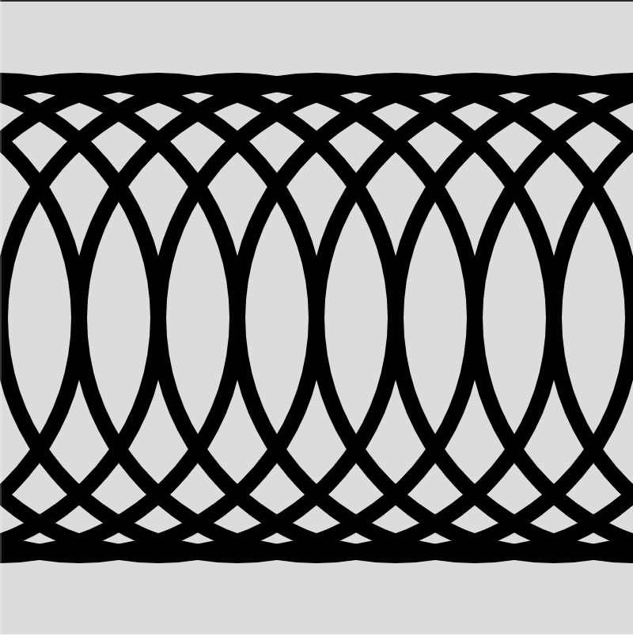

P5JS
Il existe plusieurs différentes libraries en JavaScript. P5JS est une super librairie pour commencer à apprendre!
Commencer !Il existe plusieurs différentes libraries en JavaScript. P5JS est une super librairie pour commencer à apprendre!
Commencer !Avant de t'attaquer à ce défi, on te conseille de compléter les défis suivants:
On va commencer ce projet en dessinant quelques cercles. Pour commencer, dessine un cercle au milieu de l'écran. Souviens-toi qu'un cercle peut être dessiné en utilisant la fonction circle(), qui prend 3 paramètres, deux pour la position et un pour le diamètre.
Tu peux enlever la couleur à l'intérieur du cercle grâce à la fonction noFill(), et tu peux changer la taille du traît grâce à la fonction strokeWeight(). Change ton cercle en un cercle vide mais avec un traît épais.
function draw() {
background(220);
noFill();
strokeWeight(10);
circle(200, 200, 300);
}
On ne va pas se contenter de dessiner un seul cercle, on aimerait en dessiner plusieurs. Commençons par une tâche pas trop compliquée. On veut dessiner des cercles pour qu'ils ressemblent à la figure suivante:
L'idée est assez simple! On dessine un cercle de centre (-400, 200), puis un de centre (-350, 200), etc jusqu'à (400, 200). Essaie de dessiner tous les cercles!
C'est un peu long non? Pour dessiner ces 9 cercles il faut écrire 9 lignes de code. Tu te dis sûrement que 9 n'est pas la fin du monde, mais si je te demande d'en dessiner 200 comment vas-tu faire?
En réalité il existe une fonction très utile en JavaScript pour ce faire! Sais-tu de quoi je parle?
On va utiliser une boucle! On a déjà utilisé des boucles dans le cours sur les Animations 3D! Voici un rappel de la syntaxe des boucles:
for(let i = 0; i < 20; i++) {
// Cette boucle va exécuter quelque chose 20 fois
}
Même si on croit connaître un peu les boucles, on ne les a pas encore entièrement exploitées! En effet, on peut utilises les boucles pour plus que simplement exécuter un même code plusieurs fois!
On voudrait dessiner des cercles avec des centres (-400, 200), (-350, 200), ..., (350, 200), (400, 200). On peut donc utiliser un boucle qui va de -400 à 400, avec des pas de taille 50!
for(let i = -400; i <= 400; i += 50) {
// Faire quelque chose
}
Si tu veux, tu peux même remplacer le nom de variable i pas un autre nom, genre positionX. C'est ton choix ;-)
Re-écris ton code en utilisant une boucle. Les 9 lignes d'avant peuvent être réduites en 3! Et si tu veux dessiner 200 cercles, tu peux le faire avec pratiquement les mêmes 3 lignes! C'est magique non?
for(let positionX = -400; positionX <= 400; positionX += 50) {
circle(positionX, 200, 300);
}
Imagine maintenant que tu veuille que les cercles deviennent de plus en plus petits. Il va nous être compliqué d'utiliser la variable positionX en rapport avec la taille, donc on peut définir une autre variable avant la boucle, et la changer à chaque itération de la boucle. C'est un peu moche, mais cela va marcher. Voici un exemple:
let diam = 300;
for(let positionX = -400; positionX <= 400; positionX += 50) {
circle(positionX, 200, diam);
diam -= 15;
}
Dans l'étape suivante on va essayer de reproduire le même résultat avec une autre technique. Elle est plus compliquée, mais beaucoup plus extensible et on pourra faire de magnifiques motifs avec!
Tu sais sûrement ce qu'est une fonction. On a des exemples de fonctions dans chaque code p5.js, comme les fonctions setup() et draw(). Les fonctions sont très faciles à retrouver dans le code, comme il y a le mot function devant!
La fonction setup() s'exécute au début du code, et la fonction draw() s'exécute à chaque instant. Celles ci sont pré-définies en p5.js. Mais on peut aussi définir nos propres fonctions!
Pour définir notre propre fonction, il suffit de reproduire le pattern observé sur les fonctions prédéfinies.
function maFonction() {
// Fait quelque chose
}
Écris une fonction qui dessine un cercle au centre de l'écran. Tu peux la définir tout à la fin du code, après l'accolade de fermeture de la fonction draw(). Tu peux aussi enlever la boucle d'avant, comme on va la remplacer par d'autres codes.
Image que tu aies appellé ta fonction dessinerCercle(). Pour l'exécuter, il te suffit, dans la fonction draw(), de l'appeler. Pour l'appeler, écris simplement dessinerCercle(). Cette fonction marche comme toutes les autres fonctions, sauf que c'est toi même qui l'a écrite!
function setup() {
// ...
}
function draw() {
// ...
dessinerCercle();
}
function dessinerCercle() {
// ...
}
Tu te dis sûrement que c'est débile de définir une fonction pour faire quelque chose qu'une fonction qui existe déjà peut faire, et tu as bien raison! Mais on va compliquer notre fonction pour la rendre utile!
Malheureusement on va devoir la rendre plus inutile avant de pourvoir la compliquer. On va lui ajouter des paramètres. Tu sais que la fonction circle peut prendre 3 paramètres, deux pour la position et un pour la taille. Notre fonction dessinerCercle() peut prendre des paramètres aussi, il nous suffit de le dire à la fonction quand on la définit!
function dessinerCercle(positionX, positionY, taille) {
// ...
}
En ajoutant le nom des paramètres dans les parenthèse, on indique que la fonction dessinerCercle prend 3 paramètres. Tu dois donc faire attention dans ta fonction draw(), tu dois ajouter les paramètres
dessinerCercle(200, 200, 300);
Pour le moment, les paramètres qu'on donne à la fonction dans la fonction draw() n'importent peu, comme on ne les utilise pas dans la fonction dessinerCercle(). Changeons cela!
function dessinerCercle(positionX, positionY, taille) {
circle(positionX, 200, 300);
}
Dans cette fonction, on utilise la positionX. Si tu changes le premier paramètre dans la fonction draw(), tu vas voir que le cercle bouge en X. Intègre les deux autres paramètres de la même façon!
Super! Notre fonction dessinerCercle() est officiellement la plus inutile des fonction! Pourquoi cela?
Comme la fonction dessinerCercle() prend exactement les mêmes paramètres que la fonction circle, et qu'elle les utilise pour dessiner un cercle en utilisant la fonction circle(), on pourrait simplement écrire circle() plutôt que d'écrire dessinerCercle(), et cela aurait exactement le même effet...
Rendons donc cette fonctions plus utile! On va faire cela grâce à la récursion!
Quand tu appelles la fonction, tu dis à l'ordinateur de dessiner un cercle. Imagine l'ordinateur pourrait se dire à lui même de dessiner un cercle! Par exemple, à chaque fois que l'ordinateur a dessiné un cercle, il se dit à lui même d'en dessiner encore un, mais un peu plus petit. Cela serait cool non?
Et c'est possible! C'est ce qu'on appelle la récursion, quand l'ordinateur se dit des choses à soi-même!
Pour implémenter la récursion, on va simplement appeler la fonction dessinerCercle() à la fin de la fonction dessinerCercle(). Avant de ce faire, essayons de comprendre pourquoi cela va marcher!
Dans la fonction draw(), on va appeler la fonction dessinerCercle() en lui disant de dessiner un cercle de taille disons 300. L'ordinateur va alors dessiner ce cercle, et quand il arrive à la fin de la fonction, il va se re-appeler en disant de re-dessiner un cercle, mais cette fois de taille un peu plus petite. Et ceci jusqu'à l'infini. C'est comme une boucle, mais plus intelligente. Tu verra plus tard pourquoi elle est plus intelligente!
function dessinerCercle(positionX, positionY, taille) {
// Dessiner le cercle
dessinerCercle(positionX, positionY, taille - 10);
}
Il faut faire très attention avec ce code! Si ton ordinateur n'est pas super puissant, NE LANCE PAS le code! Mon ordinateur a failli cracher...
En fait ce code va vraiment s'exécuter jusqu'à l'infini! Mais c'est un infini plus rapide que le nombre infini d'exécutions de la fonction draw(). En fait cette fonction va s'exécuter un nombre infini de fois à chaque fois que la fonction draw() tourne. Donc pour résumer, un nombre ÉNORME de fois.
Corrigeons cela! On va dire qu'on ne veut que dessiner le prochain cercle si la taille est plus grande que 10. Sinon la taille va devenir négative et ce n'est pas ce qu'on veut...
function dessinerCercle(positionX, positionY, taille) {
// Dessiner le cercle
if(taille > 10) {
dessinerCercle(positionX, positionY, taille - 10);
}
}
Tu peux maintenant lancer le code en paix, comme on sait que le code ne va pas tourner à l'infini! Il se peut que tu doives réduire la strokeWeight() pour voir les lignes.
Remarque qu'on aurait pu simplement faire ceci avec une boucle aussi... Cela aurait sûrement même été plus simple avec une boucle. Mais ne t'inquiètes pas, on va créer quelque chose d'impossible à faire avec une boucle normale!
Mais d'abord, on va re-créer le dessin de l'étape 2. Notre premier cercle doit être dessiné avec une positionX de -400, ceci est la valeur à mettre dans la fonction draw(). Les autres paramètres peuvent rester les mêmes.
dessinerCercle(-400, 200, 300);
Dans la fonction dessinerCercle(), on veut alors pas seulement diminuer la taille, mais aussi pousser la figure un peu à droite.
Pour ce faire, tu peux simplement, lorsque tu re-appelles la fonction, pousser la positionX un peu à droite ;-)
dessinerCercle(positionX + 20, positionY, taille - 6);
Voilà! On a réussi à reproduire le même code qu'avant, mais de façon plus élégante!
Tu n'est peut être pas encore convaincu de cette méthode, comme on aurait sûrement pu un peu travailler sur la méthode avec la boucle pour la rendre élégante aussi. Et tu as raison! C'est pourquoi nous allons nous attaquer à un autre exemple encore plus joli dans l'étape suivante!
On va maintenant faire un exemple plus compliqué pour démontrer l'utilité de la récursion! L'idée est toujours avec des cercles, mais à chaque cercle qu'on dessine on va en dessiner un à droite et à gauche. Ceci va former quelque chose de bizarre, comme à chaque cercle à droite et à gauche, on va dessiner un cercle à droite et à gauche, etc.
Tout d'abord, on veut commencer par un gros cercle au milieu. Pour ce faire, change les paramètres initiaux de dessinerCercle() dans la fonction draw().
Ensuite, on veut dessiner 2 cercles à chaque fois qu'on a dessiné un cercle dans notre fonction. N'oublie pas de garder le if() {...}, sinon on aura le problème que le programme va tourner à l'infini. Tu peux pourtant réduire le nombre de l'autre côté de l'inégalité.
function dessinerCercle(positionX, positionY, taille) {
circle(..., ..., ...);
if(taille > 1) {
dessinerCercle(..., ..., ...);
dessinerCercle(..., ..., ...);
}
}
Tu peux changer la taille par un facteur multiplicatif plutôt qu'additif si tu le souhaites, cela donne très bien à mon avis! (Donc faire par exemple taille * 0.6). N'oublie pas que le premier nouveau cercle doit être décalé vers la droite, et le deuxième vers la gauche (Ou l'inverse.)
Voici mon code, mais adapte le comme tu le veux!
function dessinerCercle(positionX, positionY, taille) {
circle(positionX, positionY, taille);
if(taille > 1) {
dessinerCercle(positionX - taille/2, positionY, taille*0.6);
dessinerCercle(positionX + taille/2, positionY, taille*0.6);
}
}
Essaie de dessiner des cercles dans d'autres directions, peut être dessiner plus de 2 cercles par cercle. Tu peux aussi essayer des d'autres formes! Tu peux aussi changer la couleur en fonction de la taille (Tu peux ce faire en ajoutant un autre paramètre, je te laisse expérimenter ;-) )